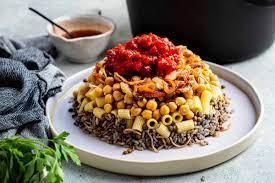

Koshary

Description
Koshary, koshari or kushari is one of the traditional Egyptian food. This dish is considered the national dish of Egypt
and a very popular street food. Egyptian koshari recipe is one of the easy Egyptian recipes. See more of Egypt famous
food.
Egyptian cuisine has a lot of flavorful recipes that evolved as a way to use leftovers. This hearty dish features rice,
pasta, lentils... and a lot more. You can think of Koshari as the second cousin of Mujaddara but has much more flavors
as it is topped with a spiced tomato sauce and a delicious cumin sauce.
Ingredients
- 1 1/2 cup brown lentils, picked over and well-rinsed
- 1 ½ cup medium-grain rice, rinsed, soaked in water for 15 minutes, drained
- ½ tsp each salt and pepper
- ½ tsp coriander
- 2 cups elbow pasta
- Cooking oil
- Water
- 1 15-oz can chickpeas, rinsed, drained and warmed
- Salt and pepper
Steps
- Cook the lentils. Bring lentils and 4 cups of water to a boil in a medium pot or saucepan over high heat. Reduce the
heat to low and cook until lentils are just tender (15-17 minutes). Drain from water and season with a little salt.
(Note: when the lentils are ready, they should not be fully cooked. They should be only par-cooked and still have a bite
to them as they need to finish cooking with the rice).
- Now, for the rice. Drain the rice from its soaking water. Combine the par-cooked lentils and the rice in the saucepan
over medium-high heat with 1 tablespoon cooking oil, salt, pepper, and coriander. Cook for 3 minutes, stirring
regularly. Add warm water to cover the rice and lentil mixture by about 1 ½ inches (you'll probably use about 3 cups of
water here). Bring to a boil; the water should reduce a bit. Now cover and cook until all the liquid has been absorbed
and both the rice and lentils are well cooked through (about 20 minutes). Keep covered and undisturbed for 5 minutes or
so.
- Now make the pasta. While the rice and lentils are cooking, make the pasta according to package instructions by adding
the elbow pasta to boiling water with a dash of salt and a little oil. Cook until the pasta is al dente. Drain.
- Cover the chickpeas and warm in the microwave briefly before serving.